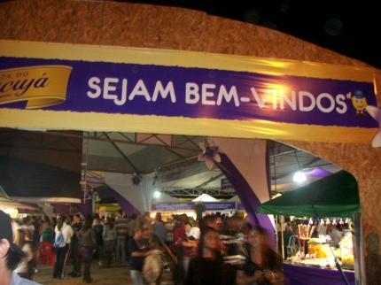
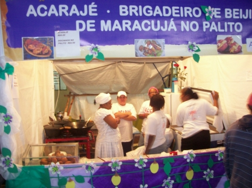
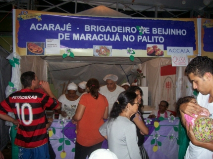
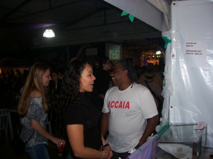
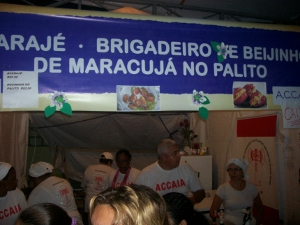
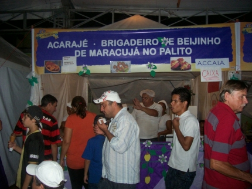

Festa do Maracujá
O cultivo do maracujá, introduzido em Araquari em 1987 pelo grupo Sinuelo, revelou-se uma sedutora alternativa para a agricultura no município do litoral norte catarinense a partir de 1993. A nova cultura além de excelente produtividade encontrou mercado, atraindo o interesse de agricultores das localidades do Guamiranga, Ponto Alto, Corveta e Rainha. Destacou-se do produto agrícola e da pesca, setores de importante valor econômico para o município. A evolução do cultivo do maracujá contou com o apoio direto da Prefeitura municipal, que determinou assistência técnica a todos os agricultores, por entender que a atividade representava uma oportunidade para a economia rural, sem a necessidade de um grande investimento. A EPAGRI, órgão de assistência técnica do governo do estado, também se engajou nesse processo de auxiliar aos agricultores, contribuindo de forma sistemática com nova cultura instalada na região norte de Santa Catarina. Em meados de 1993, uma comissão liderada pelo então Prefeito na época Aci Ferreira de Oliveira (In memorian), conduziram calorosas reuniões com os produtores em busca de um ideal, transformar a pequena Araquari na capital catarinense do Maracujá. Tendo o município grande potencial de destaque na agricultura, iniciando uma cultura promissora para os pequenos proprietários na época com 10 produtores potenciais. No dia 10 de Julho de 1994, a festa lançada oficialmente as 22h00min com baile animado pelo conjunto Ramal 05, no Salão de Festa na Paróquia do Senhor Bom Jesus, porém iniciada a divulgação em abril de 1994 para ser realizada somente em abril de 1995, juntamente com as comemorações do aniversário da cidade. Berenice Duarte, filha do agricultor Iberê Duarte e da vereadora Terezinha Duarte, representou a colhedora de Maracujá, e com sua graçae beleza encantou e ajudou a divulgar a festa. Motivo de orgulho aos araquarienses a comemoração foi em dose dupla, já que na época a cidade comemorava seus 131anos de emancipação política. Acontecia então, nos dias 20, 21,22 e 23 de abril de 1995 a 1ª Festa do Maracujá e a 1ª Expofeira Agropecuária e Industrial de Araquari com a finalidade de promover e auxiliar as entidades filantrópicas do município, resgatar a vocação agrícola e encontrar o caminho cultura do homem do campo. Mostrar o folclore religioso trazido pelos escravos e, ainda reunir a comunidade em torno de diversos eventos.
Abaixo, algumas fotos da festa




Copyright © 2011- Todos direitos reservados à ACCAIA
Rua Arildo Jose da Silva,99 - Itinga Joinville - SC - Cep: 89245000
::: Suporte 04791261971 :::
Editor on line